My Farm Advisor · eda-field-portfolio
30 fields across 3 growers, compared on boundaries, crop history, and weather.
./scripts/run-eda-field-portfolio.sh --stage all
Reading this report. Each card answers one question and
carries the finding, the test and effect size, the sample size, and the caveat
that limits it — read the caveat before quoting a number. Nothing here is
recomputed: every value is copied from the analysis.json the run
already wrote. Print the page to PDF from a browser for a paginated copy.
Field size and shape from the ingested boundaries. The unit is the field; there is no time dimension here.
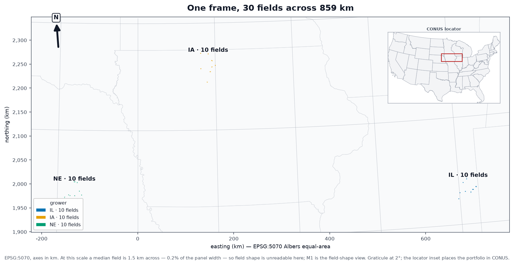
Where does the whole portfolio sit, and how far apart are the farms?
All 30 fields fall into 3 clusters spanning 859 km east-west and 312 km north-south. A median field is 1.5 km across, 0.2% of the panel width, so the shared frame is a location view, not a shape view.
Caveat. The shared frame compresses each farm to a dot: distance between clusters is honest, field shape and layout are not. Read shape in M1. A single true-north arrow is drawn at the portfolio centre; grid convergence shifts north by a few degrees across the panel.
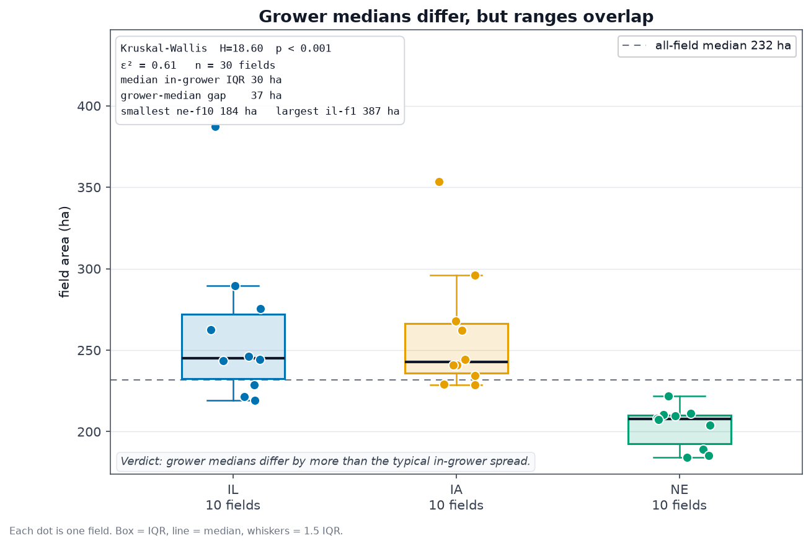
Are the three growers' fields distinguishable by size alone?
Areas span 184-387 ha. The typical in-grower IQR is 30 ha against a 37 ha span between grower medians, so grower medians differ by more than the typical in-grower spread. The groups separate as samples, not as individuals: size alone does not say which grower a field belongs to.
Caveat. n=30 fields across three farms (10 each). The test describes field-to-field variation, not a designed experiment; the grower comparison is 10 vs 10 vs 10.
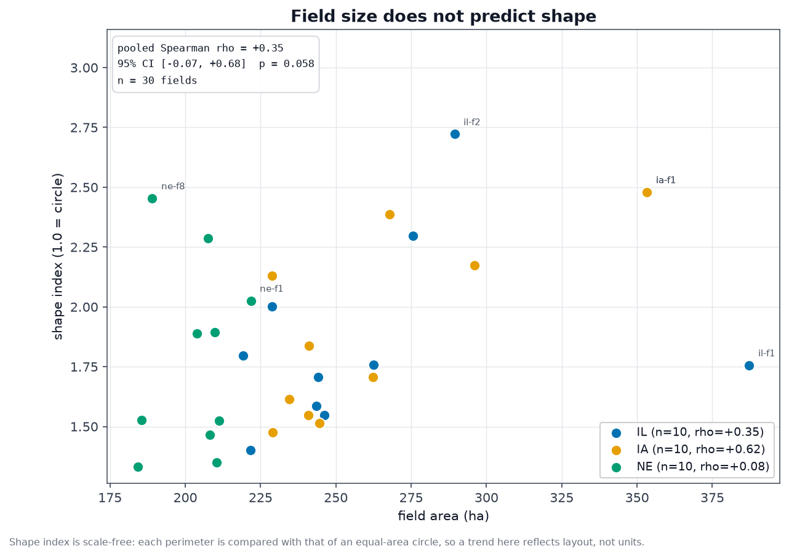
Does field size predict boundary complexity?
Pooled Spearman rho = +0.35 (95% CI -0.07 to +0.68) over 30 fields: no evidence of a monotone size-shape trend (the 95% CI includes zero).
Caveat. Rank correlation over 30 fields resolves only strong monotone trends; a value near zero means no monotone relation, not proof of independence for every possible shape.
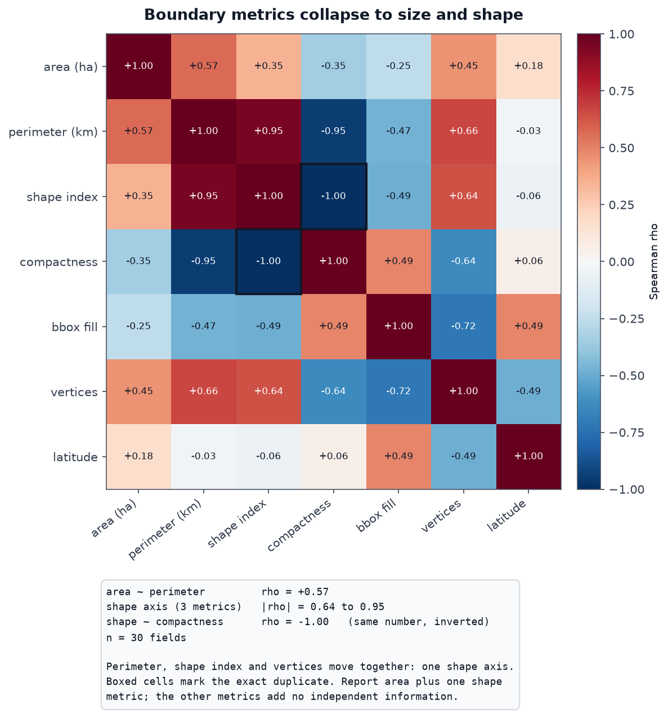
Which boundary metrics carry distinct information?
Area is the only independent size metric (rho with perimeter +0.57). Perimeter, shape index and vertices co-vary at |rho| = 0.64 to 0.95; compactness is shape index inverted (rho = -1.00). Quote area plus one shape metric; the rest are duplicates.
Caveat. The near-1.0 entries are properties of the metric definitions, not of these particular fields; they would hold for any boundary set.
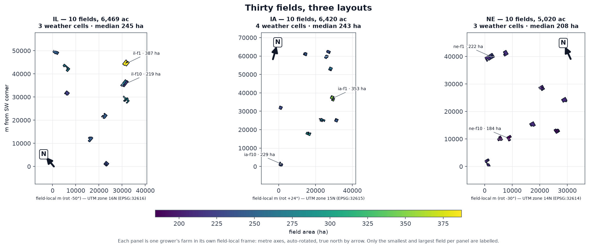
Where are the fields, and how does each grower's layout differ?
30 fields across 3 growers, 17,909 acres. Panels are independent field-local frames; the 10 weather cells behind them are fewer than the 30 fields, so field-level weather is not independent.
Caveat. Each panel has its own tilt, so compare layout and shape, not absolute orientation. Fill is a continuous area ramp, not a class. Only the smallest and largest field per panel are labelled; the rest are identified in tables/table_fields.csv.
What each field actually grew, using the dominant CDL class per field-year. Consecutive years are a sequence, not independent samples.
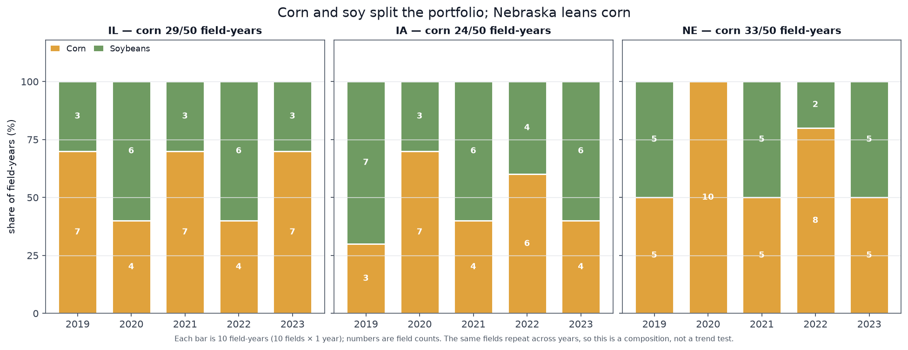
How is the planted crop mix distributed across growers and years?
Corn covers 86 of 150 field-years (57%). IL 29/50; IA 24/50; NE 33/50. Soybeans are the counterweight everywhere except Nebraska, and no year departs from the same two-crop split.
Caveat. Field-years are not independent: the same 10 fields appear in all five years, so the bar is a composition, not a trend. The dominant class is used; minority edge classes (grass, forest, wheat) never win.
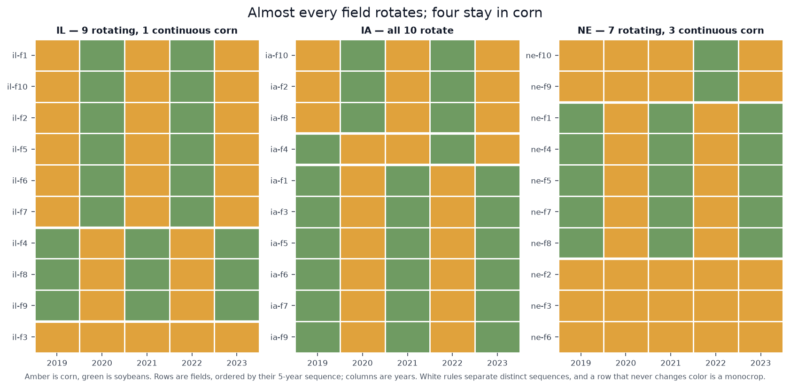
What crop sequence did each field actually follow from 2019 to 2023?
26 of 30 fields change crop at least once; 4 stay in continuous corn and none stay in soybeans. 5 distinct 5-year sequences appear. The repeating Corn–Soybeans beat is the norm, with corn–corn runs concentrated in Nebraska.
Caveat. Five years and thirty fields: the grid shows what happened, not what is agronomically intended. A one-year switch back to the same crop still counts as rotation here; read the rows, not a summary label.
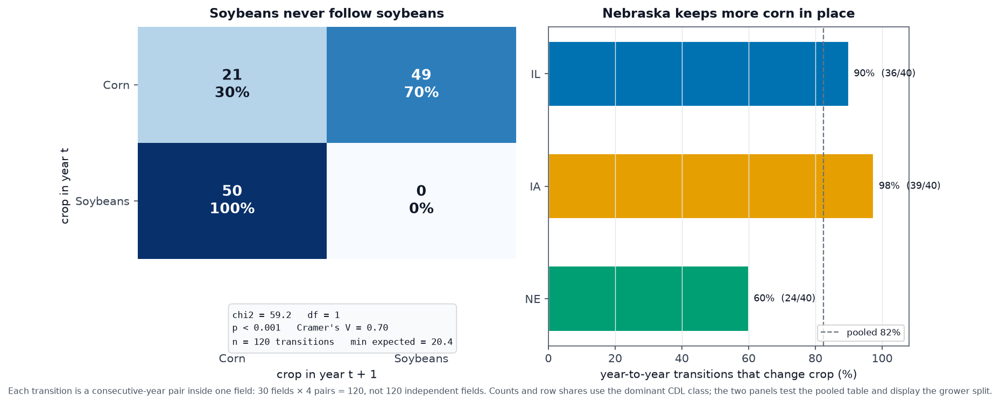
Does the next crop depend on the current crop, and does every grower rotate alike?
82.5% of 120 year-to-year transitions change crop (99 of 120). Soybeans are followed by corn in 100% of cases, while corn is followed by corn 30% of the time. Switch rates run IL 90% (36/40), IA 98% (39/40), NE 60% (24/40); same-crop transitions are IL 4, IA 1, NE 16 (all corn), concentrated in Nebraska.
Caveat. The 120 transitions overlap: four consecutive pairs share each field, so the chi-square p-value is anti-conservative. The zero soybean→soybean cell and the grower split are the robust facts; treat the p as a description of this window, not a population test.
Seasonal heat, frost, and rain on the NASA POWER cell, rolled to cell-year. Thirty fields are not thirty climates.
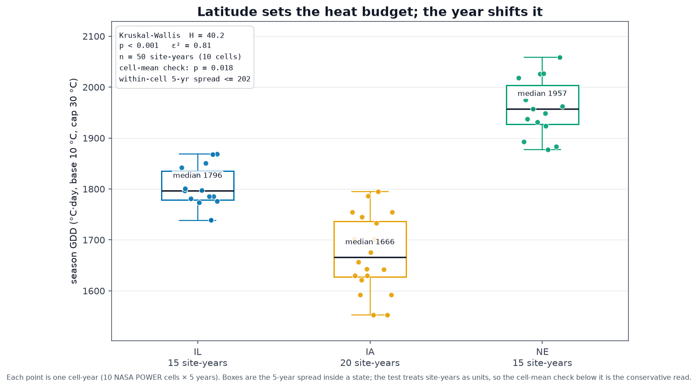
How much seasonal heat does each site get, and is the difference a grower or a year effect?
Median season GDD is IL 1796, IA 1666, NE 1957. The groups separate overall (H = 40.2, p < 0.001, ε² = 0.81). The year-to-year spread inside a cell (median 146, max 202 GDD) is wider than the 130 GDD gap between the closest group medians, so the cooler groups overlap even though the hottest one stands apart. Latitude sets the level; the year decides where a site lands within it.
Caveat. The five years behind a cell are repeated measures, so the site-year p-value is optimistic; the cell-mean test uses 10 units and is the conservative check. GDD is a heat sum, not a yield predictor, and the cap convention is stated in the guide.
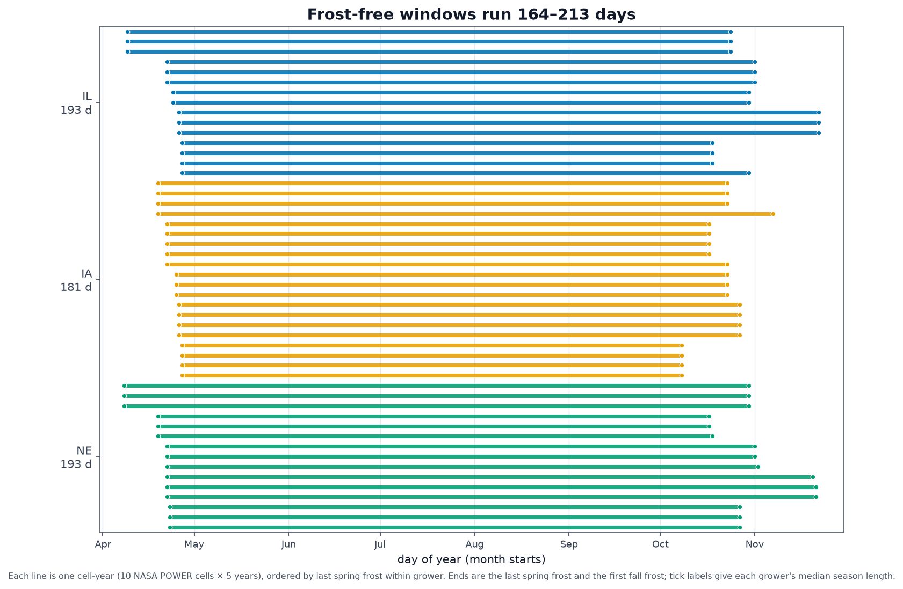
When does the growing season start and end, and how much does the window vary?
Across 50 site-years the frost-free window runs 164–213 days (median 187). IL median 193 days (174–210); IA median 181 days (164–202); NE median 193 days (181–213). Spring frosts cluster in the third week of April and fall frosts in late October to early November. The longest and shortest medians differ by 12 days, so the contrast is a shift of weeks, not a different season type.
Caveat. A frost is Tmin < 0 °C inside the spring (Mar–Jun) or fall (Aug–Nov) window; a January thaw is not a season start. The window says when freezing stopped and resumed, not whether a crop was in the ground.
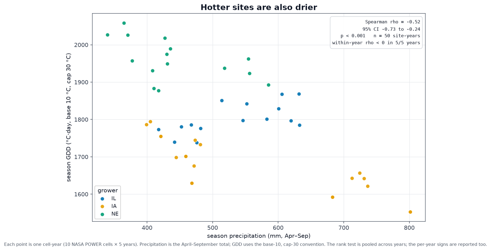
Do the hotter sites also get less seasonal rain?
Seasonal precipitation and GDD are negatively rank-correlated (rho = -0.52, 95% CI -0.73 to -0.24, p < 0.001) over 50 site-years. The sign holds within each year (5 of 5), so the west-to-east moisture gradient is not an artefact of pooling five different years.
Caveat. Ten cells supply the spatial contrast and five years the temporal one; the pooled rank test mixes both, so the per-year signs are the check. Rank correlation says the wetter sites are cooler, not that rain causes cooler conditions.